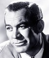
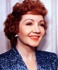

IT HAPPENED ONE NIGHT
It Happened One Night is a 1934 pre-Code American romantic comedy film with elements of screwball comedy directed and co-produced by Frank Capra, in collaboration with Harry Cohn, in which a pampered socialite (Claudette Colbert) tries to get out from under her father's thumb and falls in love with a roguish reporter (Clark Gable). The screenplay by Robert Riskin is based on the August 1933 short story "Night Bus" by Samuel Hopkins Adams, which provided the shooting title. Classified as a "pre-Code" production, the film is among the last romantic comedies created before the MPPDA began rigidly enforcing the 1930 Motion Picture Production Code in July 1934. It Happened One Night was released just four months prior to that enforcement. It has garnered critical acclaim and is widely hailed one of the greatest films ever made. It Happened One Night is the first of only three films (along with One Flew Over the Cuckoo's Nest and The Silence of the Lambs) to win all five major Academy Awards: Best Picture, Best Director, Best Actor, Best Actress, and Best Adapted Screenplay. In 1993, it was selected for preservation in the US National Film Registry by the Library of Congress, being deemed "culturally, historically, or aesthetically significant." In 2013, the film underwent an extensive restoration by Sony Pictures.
SHOW TIME
STARTS TODAY 09 DEC,10 DEC,12DEC,15DEC,18DEC
peolpe to watch the movie starts from 13pg
In Frank Capra's acclaimed romantic comedy, spoiled heiress Ellie Andrews (Claudette Colbert) impetuously marries the scheming King Westley, leading her tycoon father (Walter Connolly) to spirit her away on his yacht. After jumping ship, Ellie falls in with cynical newspaper reporter Peter Warne (Clark Gable), who offers to help her reunite with her new husband in exchange for an exclusive story. But during their travels, the reporter finds himself falling for the feisty young heiress
